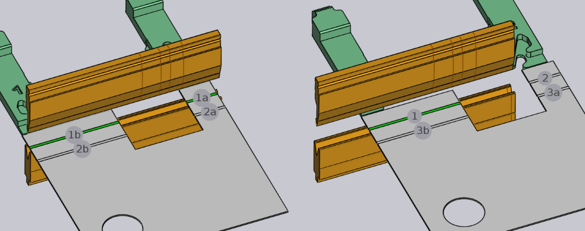

Edycja gięcia
Podstawowe ustawienia gięcia można przeglądać i edytować za pomocą panelu Gięcie. Aby otworzyć panel Gięcie dla konkretnego gięcia:
-
Kliknij Gięcie w nawigatorze gięcia, aby wybrać gięcie.
-
Kliknij ponownie na tym samym gięciu, aby otworzyć panel Gięcie i edytować to gięcie.
Alternatywna metoda:
-
Ctrl+Kliknij gięcie w nawigatorze gięcia, aby wybrać gięcie i otworzyć panel edycji dla tego gięcia.
Panel Gięcie

Panel Gięcie wygląda jak na ilustracji obok. Są w nim ustawienia i operacje do pracy z gięciem.
-
Dane wejściowe Position służą do przesuwania gięcia wzdłuż maszyny. Wyświetlana tutaj wartość to pozycja lewego końca gięcia na skali maszyny. (Możesz również przeciągnąć gięcie, aby interaktywnie ustawić pozycję, patrz rozdział poniżej).
-
Listy Setup i Station służą do przenoszenia tej operacji gięcia do innej konfiguracji. Konfiguracja [1] lub do innej stacji station[2] w ramach tej konfiguracji. Te wybory pojawiają się tylko wtedy, gdy dla detalu dostępnych jest wiele konfiguracji lub jeśli konfiguracja ma odpowiednio wiele stacji. (Możesz również przesunąć gięcie do innej stacji, po prostu klikając na obrabiany detal i przeciągając go, dopóki nie zostanie wyrównany z inną stacją).
-
Przycisk Turn Part służy do odwracania detalu (wkładania go drugą stroną do maszyny). Poniższy rysunek pokazuje efekt kliknięcia tego przycisku (ponowne kliknięcie tego przycisku spowoduje przywrócenie pierwotnego ułożenia):

-
Przycisk Ungroup pojawia się podczas edycji zagięcia wielomodułowego (gięcia składającego się z dwóch lub więcej współliniowych modułów). Jeśli zgrupowane gięcie można rozbić i poddać obróbce jako oddzielne gięcia, ten przycisk może być użyty do rozbicia tej operacji gięcia na dwie osobne. Poniższy rysunek pokazuje, w jaki sposób gięcie 1 (wyświetlane jako 1a i 1b w trybie sekwencjonowania) dzieli się na gięcie 1 i 2 po rozbiciu:
 -
Łącze Angle Measure służy do wyświetlania panelu pomiaru kąta dla tego gięcia. Ten przycisk jest widoczny tylko wtedy, gdy jedna lub więcej metod pomiaru kąta jest dostępnych dla wybranej maszyny.
-
Przycisk Skip Bend służy do polecenia TecZone Bend, aby nie poddawać obróbce tego konkretnego gięcia. Jest to przydatne do oznaczania niektórych gięć jako obrabianych za pomocą innej technologi niż prasa krawędziowa (na przykład wykrawarki lub giętarki krawędziowej).[3]
-
Zaznacz pole wyboru Coining, aby nakazać TecZone Bend wykonanie tłoczenia. Opcja jest włączona tylko wtedy, gdy tłoczenie byłoby możliwe (zwykle oznacza to, że istnieje zdolny do tłoczenia stempel i matryca, których można użyć). Tłoczenie wymaga większej siły nacisku, ale może skutkować ciaśniejszym promieniem gięcia niż przy gięciu w powietrzu. Tłoczenie wymaga również stempla i matrycy o dokładnym kącie wymaganych dla tej operacji gięcia.
-
Włącz opcję Pre-bending, aby podzielić to gięcie na dwie oddzielne operacje – gięcie wstępne i gięcie wykończeniowe. TecZone Bend domyślnie przesunie gięcie wykończeniowe do pozycji tuż za następnym gięciem w sekwencji. Zapoznaj się z poniższą sekcją, aby uzyskać więcej informacji na temat stosowania gięcia wstępnego.[4]
-
Użyj przycisków Prev i Next, aby cyklami przechodzić przez edycję różnych gięć w detalu.
Zaawansowane operacje
Oto kilka bardziej zaawansowanych operacji, które można wykonać za pomocą gięcia.
Korzystanie z gięcia wstępnego
Niektórych rodzajów zderzeń można uniknąć, dzieląc operację gięcia na gięcie wstępne i gięcie wykończeniowe. Oto prosty przykład:
Powyższy detal ma dwa gięcia, a na drugim detal zderza się z szyną matrycy. Nie można tego poprawić, zmieniając sekwencję. Jednym z możliwych rozwiązań jest wprowadzić gięcie wstępne na gięciu 1, wybierając gięcie 1 i zaznaczając pole wyboruPre-bending.

Jak widać na zdjęciu, powoduje to podzielenie gięcia 1 na gięcie wstępne i gięcie wykończeniowe (które teraz staje się gięciem 3). Ikony na nawigatorze gięcia wskazują teraz, że gięcie 1 jest gięciem wstępnym, podczas gdy gięcie 3 jest gięciem wykończeniowym. Możesz użyć pola danych wejściowych Prebend, aby precyzyjnie dostroić kąt zgięcia wstępnego. W tym przykładzie kąt jest ustawiony na 120 stopni, więc detal zostaje wygięty od stanu płaskiego (kąt wewnętrzny 180) do 120 stopni w pierwszym etapie, a następnie do 90 stopni w drugim etapie. Tak więc, podczas obróbki gięcia 2 pierwszy kołnierz nie jest całkowicie wygięty, a tym samym unika zderzenia z szyną matrycy (poniższe zdjęcia przedstawiają sytuację, w której poddawane są obróbce gięcia 2 i 3):

Edycja wielu gięć
Istnieje możliwość edycji wielu gięć w tym samym czasie. Aby to zrobić:
-
Kliknij gięcie w nawigatorze gięcia, aby je wybrać.
-
Przytrzymaj Shift i wybierz dodatkowe gięcia, aby edytować je wszystkie razem.

Wyświetlany jest panel edycji, taki jak ten obok. Wyświetlane są tu niektóre operacje edycji, które można wykonać na wszystkich gięciach razem. Ponadto panel ten może wyświetlić kilka dodatkowych przycisków:
-
Przycisk Group jest wyświetlany, jeśli wybierzesz dwa lub więcej gięć, które są współliniowe i mogą być zgrupowane w jedno wielomodułowe gięcie.
-
Przycisk Swap Bends jest wyświetlany po wybraniu dokładnie dwóch gięć i umożliwia zamianę dwóch gięć w sekwencji (jest wyświetlany tylko wtedy, gdy można zamienić kolejność dwóch gięć).
-
Jeśli dwa gięcia są równoległe i w przeciwnych kierunkach i znajdują się w niewielkiej odległości od siebie, może być możliwe połączenie ich w jedno gięcie Z. W takim przypadku zostanie wyświetlony przycisk Make Z-Bend.[5]
Przeciąganie gięcia
Pole danych wejściowych Position może służyć do precyzyjnego pozycjonowania gięcia. Często łatwiej jest po prostu przeciągnąć gięcie do wymaganej pozycji. Aby to zrobić:
-
Upewnij się, że panel edycji gięcia jest otwarty (klikając dwukrotnie numer gięcia).
-
Kliknij detal w pobliżu linii gięcia i zacznij przeciągać go w lewo/prawo.
W zależności od tego, gdzie przytrzymujesz część (w pobliżu środka linii gięcia lub w pobliżu lewej/prawej krawędzi), TecZone Bend wygeneruje automatyczne linie przyciągania, które pomogą Ci dokładnie ustawić gięcie względem stanowiska narzędziowego. Poniższy rysunek przedstawia przeciągane gięcie przytrzymane w pobliżu środka lub w pobliżu lewej krawędzi.

Linie przyciągania na powyższych rysunkach pokazują, że gięcie jest umieszczone dokładnie w środku stanowiska narzędziowego lub gdy lewa krawędź jest dokładnie zrównana ze stemplem i matrycą.